想不到要怎麼做卡片，最後決定發揮自己的專長給你卡片所以寫了一個APP會不會覺得很low阿 哈哈。
不知不覺地超過半年了，跑跑跳跳許多地方，妳也又老了一歲，雖然看起來跟我差不多。然後我又天生內向害羞不愛講話，妳一開始應該很辛苦吧!一個安靜的帥哥跟會人來瘋的女友哈哈~
妳會記憶和在意奇怪的點，但是有時候我只是隨口說說的，但妳會在意，不小心傷害了妳的玻璃心真對不起QQ，我會注意改進的。但是你一定都要跟我說，不准偷偷哭泣。
家裡有很多美女妳也是美女覺得很混亂，但是我會記住誰是肉圓美女的^.^
也很謝謝妳體諒我當兵不能一直陪妳，還要陪我講電話(雖然有三分之二都是你在說!哈哈)
好啦 重點是
生日快樂 !!!!!!
愛妳喔~!! 啾~

每次都說我沒在聽沒再記，我現在就記給你看~.~
下面是我們的回憶錄喔!!
這天沒什麼照片，不過應該是我們第一次吃福勝亭吧吧吧!!!
也不太記得這天幹了什麼，但是我覺得電影的機率很高哈哈哈~
第一篇回憶好像有點落漆 ㄎㄎ love you~


不知道為什麼直接飛到了二月@@
應該是我沒拍照吧?!
那時候幾乎每次約會都下雨吧，覺得難過
來嘗試聽說好吃的早餐
好啦 我知道第二篇回憶也怪怪的...

這算是我們第一次出遠門吧，第一個口袋
然後來陪小帥哥爬山，雖然妳有點廢廢的哈哈哈
沒幾步就汗如雨下了QQ
不過這次走了好久，擎天崗、娟絲瀑布、冷水坑、牛奶湖
對新手好像有點多拉，好棒棒，謝謝甜不辣願意陪我走
最後 你還記得妳欠我$500嗎 :)
還去了人山人海的淡水，吃西堤 可怕的大生菜
有人還累到睡著了~ 辛苦了
然後終於可以打多一點了哈哈 請見下回


是個櫻花綻放的季節
是大同山，我也沒去過，他的入口真的很詭異耶
然後妳當然還是上氣不接下氣 ㄎㄎ
還有妳嫌棄我綁頭髮
那天忘記走多久了 不過還是看到了漂亮的櫻花
還拍到好多漂亮的照片，還有看花的美女
雖然回去的時候走了超級無敵長的路 不喜歡平地 好累喔哈哈
走完之後跑去買鞋子了，其實我不太確定是不是那天 但是印象中我身上有個袋子~
本來晚上是要去看大同山夜景的但是好像找不太到
後來妳就說要去虎頭山了~ 然後兩個地方傻傻分不清 最後來是到了拉
不過下雨起霧有點煞風景，還有半路認親的可愛小黑
又結束了開心的一天


 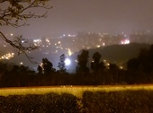
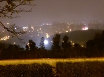
今天是著風和日麗的好日子，我們到了八里玩耍
借了好爛的腳踏車(我的拉)
騎了一些我沒去過的地方 開心
看了小螃蟹 好久沒吃一口蟹了
還去了十三行看怪怪的東西 有人還偷偷在樓梯拍帥哥:)
把我拍得有點憂鬱小生 人家狄卡的都拍得超美的
還好夠帥撐得住場面~~


爬山again!!!!
這次應該是我充分體會到什麼叫做地圖障礙了吧
每次都在路口才在跟我改變方向...
傷心事就不多說了 哈哈
充滿瀑布的滿月圓
這次應該好走很多了吧 ㄎㄎ 都是樹蔭
我們停在瀑布那裏好久好久好久喔 觀察奇怪的鳥
然後有人眼睛一直有問題看不到魚.......
看不到自己同伴是有點奇怪拉
好像有人問過我是不是每隻魚的肚子都是白色的= =
最後又跑去了三峽老街賞櫻了，三峽的好大好紅喔。
 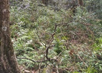
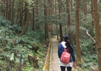
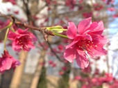
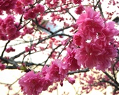
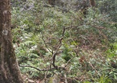
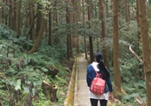
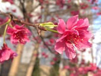
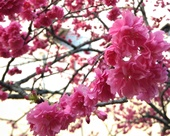
又來雷雷的回憶了，照片只有三商巧福哈哈哈
我連我們小菜吃什麼都記得耶 你吃很多三色豆的排骨飯 我吃牛肉麵
但是忘記那天去幹嘛了 QQ
所以只好快速的結尾了! 難道是電影?

這天很難過又下雨了
約了午餐吃輔大檸檬草
等超級無敵久 然後每次有人說要走的時候都不走
一走就暴雨...ㄎㄎ
還好我夠帥不然就淹水了~


螢火蟲之日，第一次帶你看螢火蟲
有沒有覺得很好玩
拍不下來的美景
雖然妳都不理星星QQ
記憶中妳好像又導航錯了 還好最後還是繞的過去 西西~


火車日，第一次跟你出來坐火車
這天真的好充實好累
黃金博物館?
荒野神社
煙道路口
九份老街
遠看茶壺山
黃金瀑布
暈死人的公車，座完我都放完電了@@
最後還有工具人司機載我們去海大看不給看得螢火蟲
還載我們去基隆破破的火車站
回到樹林還去了那個我不知道什麼的夜市 還是那是商圈?
超級無敵累得一天，金魚也很累吧 哈哈 不過也很開心


 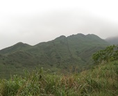
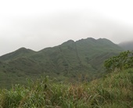

一早就吃了很雷的早餐 覺得可憐
去了沒有桐花的桐花公園
好啦 其實有意點在路上
然後我一直以為看桐花的地方還沒到
結果是........
不知不覺就一直爬上去了 莫名地爬了山
是還不錯啦 哈哈
然後我的小金魚又有美肌了
紅通通蘋果肌 XD
到底有沒有化妝真的沒人看的出來
最後跑去府中買褲褲
吃了咖哩滷肉飯 哈哈 忘記名子
然後說要走有人一直不走 我們要走的時候就下雨了...
還好最後賭成功沒下大XD

 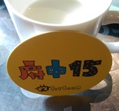
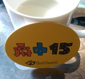
這是第一次和你們家人出去
真是忐忑又緊張
大家也都很好沒發生什麼事~~
看到了爸爸阿嬤 ㄎㄎ 我很年輕
去了白沙灣
老梅綠石槽
富基漁港 第一次吃到這麼多殼的東西
玩得很開心:)
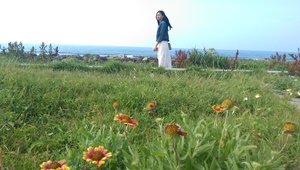
這是個莫名其妙人越來越多的旅程 哈
又多了 乾爸 乾媽 阿公
然後阿公知道我是哪位嗎??!
去了大華說的不吉利八卦山，我們走遍了耶 傻眼
高美濕地 大家都在偷東西
還有 梧棲漁港 每次出門都在吃海鮮耶
你們家是不是海鮮控阿
突然意識到 ㄎㄎ
也是個開心的一天 認識了乾爸乾媽
雖然妳也是不太理他們就是了......
整個就句點王阿~~
 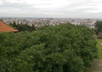
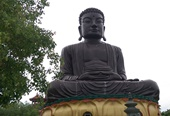
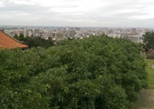
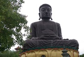


我來新增囉~
雖然也不知道你會不會定時來看
我就默默地自己更新!
這天是個漫長的一天
前一天有人爽爽的吃消夜豆漿 騎腳踏車 哈哈
兩點才回家
心疼大美女沒睡飽不敢叫
最後跑去虎頭山發現了一個好玩的地方
那個好像叫假日花市 有機會再去仔細看看
有點像夜市
晚上到了南亞超難過沒香菇
然後買了媽媽的套子
他說不敢凹他 又怕髒 超珍惜 哈哈 看起來應該有滿意
以上
錯過了司馬庫斯我們還有東眼山阿 ㄎㄎ
雖然有人明明超想睡覺
天氣超級無敵熱 我的曬痕好像回不去了QQ~
其實我們走的是比較難的拉(有嗎?)
好拉~我們沒有走到的那一條是平的 只是是斜坡慢慢上去
適合養老路線
有人又一直爆汗了~哈哈
然後蝴蝶很可愛不要怕她
下次就要觀音山了喔!!!!!

要新增台南的突然發現這個沒有加到耶 ㄎㄎ
久違的騎腳踏車
雖然金魚依然廢廢的
不過爸爸都有在後面跟著(好像其實他有偷跑
然後媽媽也一直回頭怕你不見(該運動囉~
第一次到這個地方其實也不知道自己在哪裡拉
烏漆媽黑 哈哈
然後這趟的重點是阿公的新腳踏車
從此金魚再也沒陪阿公騎車了XD

終於要完成這項作業了
三天有點不知道怎麼打 哈哈
第一次跟寶貝跑這麼遠 然後玩了三天
天氣真的是熱死人了
我變成黑炭了
也謝謝你幫我擦防曬(然後第一次知道有人防曬只擦一次
跑了好多好多的地方，雖然大部分我都有去過了
不過為了你我可以再去一次，因為跟不同人啊 :)
最有印象的其實就是十鼓，莫名其妙的溜滑梯然後又垂降，寶貝也很厲害的完成了
雖然都下來了才腿軟 哈哈 不過還是棒棒的
還有好玩的射箭，應該是垂降哥的關係所以沒有人會來排隊XDD
然後還連續三天一樣攤販的夜市，都不知道要吃什麼了
然後講到夜市就生氣 可惡...算了...
去了很多古蹟抓了很多寶，一閃而過的卡比獸
平日出去玩的好處就是沒人 但是壞處就是很多東西不會開~ 很多地方空蕩蕩的
還好有地方拍照不然就很無聊了
有空再跟小金魚出去玩喔~ 掰掰 下回見
 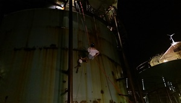
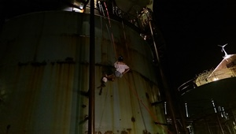

偷偷更新囉~~
記得這天天氣陰陰
然後超級小不用五分鐘就結束了
有人很厲害都可以拍很久...
希望有機會可以走個新山，雖然只能放在心中 ㄎㄎ
終於來走大名鼎鼎的水中央~
好啦 一樣好小
台灣人真的很膚淺 哈哈哈
風大到變銷婆了，不過還是很美拉~
第一次搞到連我都不想拍風景了><
本來要來看瀑布的
結果一到內湖就給我下雨
內湖真的是雨都QQ
最後只能在大湖公園抓寶貝了~
有很多小鴨鴨和小屁孩 可憐的他們一直被追
需要晴天的我們...
完全沒拍什麼照
只有痘痘照
今天給他一口氣更新完
補給你滿滿的大紀錄!!
現在開始不會放照片了喔~~ 覺得不是很安全/p>
--------------以下正文-----------------
這個夜市其實你也知道的
也不知道該說什麼，路人都想回南雅的情況
重點是第一次跟你唯二?的朋友之一?的麵包超人?一起出遠門?
哈哈哈 他是真的很愛說話 還嫌棄我喝撞奶 QQ
下次一起泡溫泉阿!!!!
今天好像是來逛百貨的
買了很多類Hang ten的變色龍
辛苦ㄚ超弟弟了 哈哈
不過他跟啟倫不合 沒賽斯~
還有順便遛遛狗
啟倫也跟著被溜
晚上一起看耶誕城的點燈開場
雖然很多人臭臭的
不過旁邊有香香的寶貝還有肥尼?
覺得開心!
今天是啟倫的臨時動議
心情不是很好 很多心煩事 哈哈
謝謝寶貝陪我到這麼晚(但是熬夜的好像還是我?哈哈)
陪我談心...雖然最後哭的不是我~
以後要一直這樣分享喔!! :)
不管是工作、學業、還是朋友(有的話拉)都可以喔!!
我們好像來的有點多次了耶
不過每次都有新的地方可以走
真的是很奇怪 是個迷宮
遛小孩的好所在~
終於找到貓頭鷹了 拍了很多醜照
在訓練一下就好了 沒事啦~~~
還有可愛的翻譯smaller dinosaur
想不太起來這天到底是幹嘛了
但是我記得我們吃檸檬草
你在捷運站等
我也坐捷運
有待寶貝解答 哈哈哈
一個跨年前一天出遊
感謝明宗司機 辛苦了 哈哈
早上去全世界只有寶貝沒去過的角板山 踏踏青
還是喜歡濕濕的隧道
還發現肥尼喜歡後座 靠著椅子超級Q
下午去超級棒的青青草原
除了陽明山我好像沒看過麼大片的地方可以躺
那裏晚上看星星一定很好
躺在很多尿尿裡面真的很舒服(咦?
那天是情侶裝喔!
還玩了溜滑梯 一個羞恥的滑下去 覺得害羞
接著去採番茄~還獲得新的仙人掌一枚
他花開到現在都還沒凋謝耶 到底是不是假的花
接著去找荒野露營的大公雞 就略過吧 哈哈
晚上陪妳在屋頂上看遠遠煙火 冷冷地 不過很開心
有很多星星陪妳喔 最亮的在你後面 ㄎㄎ
愛妳喔~ 一周年快樂
新的一年 第一次出遠門
從來沒來過這種地方 神奇的農場
雖然我以前有餵過羊 但是沒餵過羊駝阿~~
第一次看到還麼多隻還不怕人還有小隻的
還有小鴨鴨在亂走 壞鴨鴨都在搶食物 兇巴巴
小小豬喝不到奶也很可憐 QQ
真的是很好玩的地方
還看到了落雨松 很喜歡的地方~~ 可以多去這種的啟倫喜歡!
中午到了慈湖 真的有夠久沒來了
一堆被遺棄的銅像
人還是很多~~
下午最後到了我們的口袋大溪老街
真的比我想像中的長很多很多很多很多很多
還有一個被金魚捨棄的大橋
不過夜沒特別去查什麼好吃
只有吃到一個豆干，其他好像都是其他夜市有的 哈哈
今天也很開心
然後很重要說三次
今年不宜賭博!
今年不宜賭博!!
今年不宜賭博!!!
宜蘭雖然去過很多次了
但是還是有好多地方沒去過!!
辛苦美女找行程了~
一大早就泡了溫泉 真的是第一次這麼早 都還沒醒泡完就更想睡了
第一次跟妳泡溫泉 害羞害羞的 XD
去了花田村 以為會有很多東西
不過還好有很大的埤 好多大鳥鳥
還有認錯伴侶的鴨子、被押到水裡的元配
還有一個第一次就是地熱谷，雖然下雨煩煩的 不過很有趣
記得褲子以後不要穿這麼緊喔!!
還有一個湧泉 人煙稀少 雖然真的有人在露營
感覺死氣沉沉
然後第二天是好天氣 開心
去了第二個農場 然後我忘了他的名子
只記得很便宜
再次看到小豬小鴨還有超肥的火雞......
偷吃草的小羊
中午去了海邊吃海鮮 我記得曼波魚真的是保育類 為什麼可以吃
吃完讓爸去睡覺我們去看海 南方澳 還是南澳 還是什麼的 還有豆腐呷
很可惜的妳沒有去到傳藝中心 有機會再去拉 人真的太多很誇張
最後去了我沒去過的蘭陽博物館 拍了很多照片
有機會想去龜山島
很開心的兩天!!
非常非常久的口袋
真的很遠
跟以前長的都不一樣了
不過還是很漂亮拉~~
還有八卦茶園
吃了豆腐冰 還有桂花冰?
好多團客覺得煩
還有無敵大的風= =
好像沒找到之前的步道~~
第二次跟乾媽們出門
本來想說就是採海芋
沒想到這麼的特別要穿鞋 還要在水裡
弄得全身都是屎的感覺
不過是很有趣拉
路途中還有看到很久沒看到的雲海
真的還蠻幸運的~~
中間去健走 二子坪
機車的悠遊卡 不能儲值...
來陽明山這麼多次第一次知道二子坪 XD
是喜歡的山林行程 還有不受控的肥尼 一堆櫻花
中午吃了還不錯的餐廳 雖然飯真的很慢 還有牛肉事件 不知者無罪
又逛了一夏海芋田 沒水的!! 肥尼很哀怨
最後去了擎天崗 看到牛牛 雖然看了很多次
後面就被機車的悠遊卡搞砸了
謝謝乾爸乾媽最後請吃港式 雖然才吃沒多久 龍鬚好吃
完美的一天 除了逼逼卡!!
早上是個愜意的腳踏車行程?
從大稻埕出發
真的是快熱死了 ~~
眼睛沒多久舊超乾的 一個乾到不行
一下冷一下熱的 詭異天氣
中間看到很多大鳥鳥 還有被趕的遙控飛機
還有很屌的風箏 與無窮的 杜鵑花
最後騎到了靠近公館 揪了麵包超人爬象山
在冷死的大樹下吃了蘋果 還有看球~~ 還有人偷睡? 偷體溫?
最後去台電大樓還車
到了象山買包子和茶葉蛋止飢等麵包
大家戰力真的蠻低的 沒想到會有人在第一個平台就停下來耶
寶貝真的進步了
麵包真的好像很不開心 哈哈 一個被騙一直往前
不過忍字碑 真的是我的錯啦 以為不是拇指山
不過證明了一件事 大家都是做得到的阿 只是自己相信自己
你說是不是
最後走了這麼遠耶!!
阿豆阿都背兩個小孩上來了
不過韓國人和阿豆阿爬山配啤酒不知道到底哪裡學來的......
下次就要觀音山了喔 !!!!!
今天拋棄了運動來跟寶貝的哥哥吃飯
相約阿里喔 還有公雞
雖然我加入不了什麼話題 ~~
不過又多認識了一些家人 哈哈
下午又來挑戰泰山的小步道了，雖然有人的魚兒說有病
有遇到一點點的小桐花 哈哈
覺得可愛，有人喜歡插花在頭上XD
連續兩天出門
今天是爸爸媽媽要去喝茶
乾爸乾媽也有出席!~~
我們兩個自己跑去了皇后鎮森林
從以前就經過了很多很多次，但是從來沒進去過
是個很適合有小朋友來的地方 不過情侶好像就還好 哈哈
印象最深刻的就是不能兩張都抵消費的什麼XXXX茶?
最後去買了還可以的冰淇淋
最後跑去春谷吃飯，還蠻不錯的餐廳，好吃好吃
去年來過了一次什麼都沒有
這次再來挑戰一次
雖然那陣子天氣好像沒有很好，花都被打下來了
不過最後還是有看到比之前多的桐花拉!!
原來騎車到上面就很多了，之前走這麼久都找不到 ㄎㄎ
這是我第一次到台灣的外島喔!!!
不過第一天真的快要吐死了
很開心的看到飛魚不過你都不理我，後來就懂了 哈哈
一個沒東西吐真的是覺得會吐出血來，用生命在吐的
然後很不好的前兩天都是很不好的天氣，都是在乾乾濕濕的怪天氣行動
不過也因為這樣看到了很多不好看到的?
第一天還了一點點，燈塔小監獄小羊羊柴口人權的東東
晚上到了很期待的夜遊還有潮間帶本來以為很趕的行程
當然還是下雨
看到了摸到了 海兔 海星 吃到了海膽 餵到了海葵 還有看到了一眼的鰻魚
南方團善藻 螃蟹小蝦 真的好美喔
夜遊看到了梅花鹿 竹節蟲 山羌 螃蟹 青蛙 還有遇到了很少的椰子蟹
有個有趣的導遊 哈哈
第二天我們吃了鹿肉，真的覺得還好
很漂亮的浮淺 真的很漂亮耶 雖然我被咬了QQ
真的好喜歡海底
然後來包場了朝日溫泉
雖然有人把椅子弄壞了，還好我們是VIP
煮了很難熟的蛋 還有玉米 還有綠綠天然的溫泉
到了旁邊的小步道 拍了神奇的照片
雖然我們一直被雨追著跑 被風弄得一蹋糊塗 不過很有趣
路過了哈巴狗和睡美人，第三天才知道他這麼漂亮
去了柚子湖彎公洞
本來以為可以找到藍洞的，不過與雨好大 只看到似牛似馬似豬的生物
吃了非常普通的鬼頭刀水餃 還有飛魚套餐 晚上還吃了海草冰
下雨天讓我們晚上好無聊 星星都蓋棉被了
第三天早上很興奮的認真地好早起床看牛頭山日出，不過雲真的太多了拉
很幸運地又看到一個椰子蟹
回程終於看到了藍天了，不過也快要尾聲了
我們去看了睡美人哈巴狗的真實面貌 海真的好美
我們去了老闆推薦的觀海步道，太陽真的熱死人 走了很多梅花鹿的路
步道好像很久沒人走過了
都是草
不過這樣小動物才能休息吧! 有好多的大榮源XDD
午餐吃了終於吃到但是等很久的果腹 不過真的好吃 (還是前幾天真的太難吃)
後來去了人權附近的礁岩拍了好久的照片
遲來的陽光 不過真的很毒
很開心的三天
一定要再來一次 美麗的海洋
寶貝也辛苦了! 下次要在一起去喔~
今年第二次去離島，很開心這次是坐飛機喔～不用吐的不要不要的
第二次坐飛機囉～ 有人一直嗆我只做過一次
三天兩夜去了很多地方還要跳島
第一天就是走馬看花，基本上還算不錯拉
榕樹、仙人掌冰、跨海大橋、綠蠵龜、玳瑁、螃蟹蝦子館、很好吃的中餐、私人小景點、仙人掌
好美好美的海～還有人家第一次穿粉紅色照相
晚上是夜釣小管，雖然大家好像都有點暈船了
啟倫有釣到一半喔！！ 但是掉下去了ＱＱ 覺得好可惜喔
晚上住敬軒的窩
第二天
又看了好多好多海 還有又帥又漂亮的照片
還有很美的枯木
這天有我喜歡的海釣，在這次行程有前三名吧！
一開始雖然沒釣到很多，後來一直上鉤的紅貓～ 開勳又好吃
下午就用石滬抓魚，雖然還蠻有趣，但是大家好像覺得很趕不給用石滬
還有那個超遠的玄武岩
第三天有雙心石滬、腳底超痛的海灘、還有咖啡廳
忘了講還有海底世界，是這樣說嗎？ 哈哈 忘記了
我真的不知道他在跟我玩泡泡＝＝
還有跳水 很爽 不過浮淺真的不是很優
這次或許安排得沒有很好，啟倫找的對不起＝＝
不過很開心可以再插一隻旗子在島上
跟大家一起出去玩
期待下一個島嶼！！
又到了寶貝生日的日子
這天是個好天氣
我們去了虎頭山曬曬太陽
走了之前沒走到的貓頭鷹森林
都是玉華喜歡的
還有小恐龍
後來去了春天農場，原來和虎頭山是通的
雖然小小的，沒有之前去的大溪厲害
不過有很多美美的花還有美美的妳！
有沒有喜歡我給的禮物
雖然他後來衍生了很多機車的事 哈哈
不過不能討厭他喔～
生日快樂～愛妳
走了很多次的大同山
還有經過一直不知道在哪裡的青龍嶺
就是沒有繼續走過大凍山
上面的風景比想像的美好多喔～～～
還有賣奇怪的木耳什麼的 哈哈
還有毛毛蟲死在我脖子太噁心了
這時候好像已經在重玩保可夢了
有人又辛苦的跟我一起征服了一座山
下次要一起加油喔
好久好久沒有在山裡面玩水了
超乎預期的好玩
天氣又很熱，雖然老人家好像走得很累
還有肥尼 帶他涉水也是蠻累的
摔下去要一百萬
有很多很多小魚
中途雖然曾經一度有要放棄到第三座橋
不過還好最後有上去
不虛此行啊！！！！
還去了淺水灣看螃蟹 踩水！
為什麼會夏天泡溫泉忘記了
應該是來抓寶貝的
我記得第一次抓到轟魚
還有吃好吃的拉面！！
溫泉魚吃腳腳
夏天泡澡不會癢癢～
這麼快的又生日了
這次的生日過了好久的感覺
還有跟工具人吃品鼎殿
謝謝你願意跟他們吃飯，他們很開心
還拿到工具人的生日禮物ＸＤ
我們去吃了小米？炭什麼的
永遠都不知道他的名字
還有送龍蝦，雖然覺得還好 不過還是很開心
每次都沒點什麼但是還是好飽～～
還有很酷的禮物 無臉男 和 熨斗
雖然整個都黑色的真的快瞎掉了 還是花了兩三個禮拜拼好了
還有每個禮拜都有好好的在用熨斗喔，謝謝
期待下一個生日！！！
這次又插了一隻新旗子
去了完全沒去過的地方，是連經過都沒有
這次有一家人還有乾爸乾媽
北部天氣非常的不好，還好在我們逛完之前南投都還正常
還有點熱
看了好棒好棒的綿羊秀
油油的毛，喂了他們
吃了還蠻噁心的冰淇淋
危險的劇場馬術表演
他們長得真的很特別 眼睛細細長長的 真的矮矮的
還批到了狐狸皮 好美的照片
接下來天氣就時好時壞了
還去了天空步道 風景看起來心情很好
天氣好應該會更漂亮
晚上就隨便找了國民賓館
還第一次親眼在外面看到樹蛙！！
第二天一早去了瑞士小花園
就是一個沒什麼在維護的感覺
不過你拍起來還是很漂亮，有翅膀
後來又回去清境農場走沒走到的地方，看羊羊買紀念品
拍照離開！！
下一個行程是要去福壽山
不過中間有先經過賣馥梨的鳶峰，好好吃喔
還有拍星星的武嶺，希望有機會可以晚上來，不過應該超冷
中途經過梨山休息，快要吐出來了，經過了合歡山
最後到達 看了聽說要繞圈圈會有好運的天池
拍了很多照片，喝了一杯咖啡 結束這回合
雖然最後回去的時候真的是動ㄘ動ㄘ食物都在辦party
但還是很開心拉～～～～
口袋很久的瀑布終於來了
先去了大湖公園野餐，跟肥尼一起
天氣一直好像要不好的感覺
本來以為不會下的，就算下也不會很久
不過後來下了還真的蠻久的，都濕光光了
結果只有野餐拉拉ＱＱ
最後只好放棄去吃飯了
本來要吃之前吃過的那個pizza，但是又沒吃到＝＝
運好不好的一天
然後吃了一家韓式，覺得對導盲犬沒有很友善
上的也蠻亂的，服務人員好少
希望有一天可以消化這個口袋
不記得這天來幹嘛了
但是有來吃甜甜的比薩
海星的樣子
現在沒有了ＱＱ
有人去小琉球看海龜了
覺得好羨慕喔
雖然我有看海龍王飼養的
但是沒看過真的自由的
突然好想玩水，但是現在很冷
下次要去拉！！！！
有兩個新成員來報到了，今天是第一是看到
開始佔據我相簿半年的開始
小時候真的很醜
東怕怕西怕怕的
不果還蠻有趣的
miku milu 還是kuku可愛
今天應該是慶祝把把生日吧
來吃肉很多的石都府
他還上過新聞了
我吃的是鴨肉普普
還有送大蝦蝦，不過好臭喔 哈哈
不過還ok拉 真的是蠻飽的
雖然我們是小鳥胃
這天好像是他們第一次見面
肥尼想跟他們玩
但是他們怕得要死
一臉又失寵的樣子
還自動躺在我身上
是還蠻會看清現實的狗
還不斷的想偷吃飼料，不過現在貓咪都長大了
不會剩下給他吃了
有隻喵星人晉升清潔股長了 哈哈
今天跟工具人還有林口人出遊
來到苗栗充滿神仙的神仙谷瀑布
千辛萬苦的走到充滿落石不知道使否可以通行的吊橋後
看到了超級無敵
霹靂美麗
的小瀑布
是有點失望的瀑布 哈哈
不過有來吃到一家客家美食拉
最後還衝到了台中吃逢甲夜市
不過戰力真的還是很低迷
有機會再跟他們出去玩囉
今天來試吃鼎泰豐
做了面試行前準備
雖然好像沒觀察到什麼
也沒仔細數小籠包有幾摺
但是人就是夭壽多
整個莫名其妙 哈哈哈
這時候希望寶寶會上
但是上了又覺得好累喔，隨然我上班也很累 哈哈
你都被催快一點
我是被催大約什麼時候
好像其實是差不多的= =
這是阿倫第一次當伴郎倻
覺得很緊張很興奮
又不知道要幹嘛
大家都說你不用幹嘛的時候就更緊張了
那我到底要幹嘛
原來是去走秀的 哈哈哈
雖然是蠻累的
寶貝還跑來跑去的
我吃好吃滿
幫你留的你都沒時間吃
蜂蜜也忘記帶回來
不過是很酷的體驗
從小都沒當過什麼花童之類的
不知道為什麼 QQ
還好我還蠻帥的
不過腳真的很酸 討厭皮鞋
發現整個月手機都是貓咪的照片
慢慢的越來越大隻
以前還會可以用棉被抱著
現在都不給碰了
越來越傲嬌
覺得事過境遷
老了～～
今天到耶誕城看看燈
拍拍照
還看到了富有的小王子們
我們要去等陶板屋
等了一段時間
菜單有點變了
討厭的紅豆布雷換成抹茶布雷的
久久可以來吃一次拉
這次是做愛心 拿日曆和桌墊
雖然我忘記是捐到哪裡去了
超久超久沒出來的倻
來到了挑戰度0的虎頭山
走走散散心
好久沒聞到大地的味道了
有點晚來
不過還是很開心
可以踏青
好久沒出遠門囉
今天要來到奧萬大來第一次的賞楓行程
一直都很怕沒紅
雖然好像大家都覺得沒有很多紅
今年太暖活
但是我覺得很多啊 很漂亮倻 應該是我沒看過吧
到處都是漂亮的山山水水
天氣又棒棒的
這次有阿公還有阿超
阿超每次都說要換大頭照，但是拍這麼多好像也沒換過
中間要回程要走好漢坡的時候還蠻好笑的 哈哈
玉華明明就怕怕的
然後又一直說隨便
不過後來還是走完了
還看到很多猴子
晚上到了廬山溫泉
真的只有在新聞上聽過
就是颱風的時候
不然我根本不知道這個地方
真的是還沒落後的感覺
要被遺棄的一種感覺
那個冷水熱水我們永遠分不會
洗個澡洗有夠久的
還在那邊撈水
真的還蠻智障的
晚餐還蠻不錯吃的，雖然能挑的不多
再過幾年應該就荒廢了吧
第二天就回程，順道去了埔里酒廠
也是我第一次去的地方
最後跑去了車埕火車站
真的有火車在跑倻
本來以為是舊的放在那展示
但是好像只有我和玉華看到他動
這裡買了兩個戰利品
香菇和戰士
雖然乾媽好像買茶被騙了 哈哈
這兩天很開心可以出遠門溜搭溜搭！！！！
在前幾天有人偷偷的知道了他的禮物
我完全忘記我放在地上了
然後今天有人說要吃飯
一直以為是西提
很努力的找招牌
結果是吃沾美西餐廳
第一次來這種地方
覺得蠻陌生，高級高級的
不過還蠻好吃的而且真的很飽
都是麵包和湯惹的禍
牛排還有鵝肝 我是第一次吃鵝肝
很鹹但是真的很香
以後有機會再吃
謝謝寶寶 雖然有人一直說沒騙我
愛你
這種貓咪照片
還有肥尼的墊子被搶了
越來越像老大的兩隻貓
開始會偷吃亂咬
尤其是露露
應該是餓死鬼投胎
就只有睡覺的時候可愛
兩隻也越來越不給碰了
被抓到真的會無敵痛ＱＱ
終於有一天不是全部都是貓咪了
這天其實也是一個誤打誤撞走到三角埔頂山
只是想走走沒走過的奇怪公園小徑
就走到了網美打卡聖地
但就是一堆雜草啊
覺得莫名其妙 哈哈哈
我都找不到美感的點在哪裡
滿腳還都是土！！！
上面還算ok拉 風景 可以遠觀
回程的時候就請司機來接我們
不是拉 是請哥載我們去夜市玩玩
增加地圖點
基隆真的是一個好像很遠又好像還好的距離
又是開勳的一天
本來說要去看滿月圓看瀑布的
結果都是雨，這是第一次做阿宗的車
最後改去角板山那邊的新吊橋
是還蠻漂亮的拉如果有太陽
不過也是短短的
但是那個路程真的是很莫名其妙
回程的時候竟然繞了一個山頭才回原點
坐小巴又坐遊覽車
他們真的划算嗎
覺的很誇張
最後去了東街吃飯 玉華生日
對了 有乾爸乾媽他們
還好無菜單料理他們還蠻滿意的
很怕他們不喜歡 哈哈
本來規劃好的
早上看電影再去爬山
結果就是一個眼殘加上網頁很爛
以為場次很多其實很少
然後就這樣傻眼貓咪
害怡靜生氣氣了
最後就反過來先去銀河洞了
還蠻特別的地方
很像以前在看水簾洞 或是電影的感覺
有自然有有人文的地方
雖然有人一直把我拍的很肥又短腿
不過我還是原諒他好了
中午還是沒吃到你們說好吃的比薩 我跟他沒緣分
吃了沒有豬肉的豚面
做了摩天輪
真的超快下來的倻
那個view真的不行
真的很爛 哈哈哈
有機會在晚上坐坐看
還是其實他就是要拿來遠觀的
劍南山之類的
難得兩人出遊之一
今天是瀑布天
去了平溪附近的望古車站
沒想到真的還有再開
連個守門員都沒有
慢慢地走進去
沒花什麼力氣就到的瀑布
還蠻想玩水的
不知道之後會不會變得很多人就爛掉了
拍了很多唯美照
漂亮漂亮的
雖然一直有小弟弟擋路
還有荒廢的溜滑梯
以前一定很好玩
最後就去了平溪走走
為了環保不放天燈
繼續走去眼鏡蛇洞，一個經過也看不出來的洞，需要遠觀
到了很久以前來過的十分瀑布
真的變了很多
不過還是下變拍起來漂亮
阿超依然很不爽的拍照 哈哈
我們三月幾乎沒去什麼地方倻
照片少少的
寶寶在實習了，兩個人上班時間錯開了～～
不過三月有個大事
就是哥哥結婚拉！！！！！！
這天雖然我真的沒有在做什麼
但是就是很累很累
不喜歡穿西裝，還拿著捧花在路上奔跑ＱＱ
這天寶寶真的超級漂亮的喔
跟我一起當招待
美到表姐跑過來跟我說
大家一個驚嘆天女下凡！
雖然我也是潘安再世 XD
希望他們過得幸福
謝謝寶寶的幫忙
這天來到了傳說中的雲仙瀑布
一直以來都是經過但是其實不知道到底是什麼
只知道有纜車而已
真的入口也是荒涼荒涼的沒有人在顧店
做了還算大的纜車，有看到瀑布，景是還不錯拉
到了裡面有可以划船射箭的，不過沒有玩，就是走走
是個可以散心的地方
不過很多設施都沒在維護了
不知道為什麼，沒特色吧
漂亮漂亮的
然後我們就去泡了溫泉
貨比三家不吃虧
真的每間都走倻
都騙人很便宜的價格進去就說沒有了
最後最後趕去看了碧潭的水舞
繼傻傻地跟著人群坐在石街上，結果根本不是在那邊放，傻眼貓咪
大家就一起往前奔跑了
不過真的很漂亮
比我想像的還要壯觀，因為有音樂吧，配合速度
覺得開熏～
這次來到了從來沒聽過的地方
三峽白雞，應該是三峽吧，沒記錯的話
吃個推薦的滷味，好吃，還有市集在
剛進去面裡面就覺得超像行天宮
原來真的就是行天宮的分廟
還蠻多人的倻
然後我們沒有認真地爬山
走到一半就去賞桐花了
認真的拼了玉華、秀琪、mia、愛心
拼得滿身汗
玉華很難過以為只有他有ＱＱ
還很幸運的看到了台灣藍雀喔
有機會可以在拜訪白雞～
今天很特別
為了吃鰻魚飯去了台北哈哈
刺都可以吃喔
好像沒特別這樣吃過～
好吃好吃
雖然量沒有很多，男生應該都不會飽
但是還是好吃，橋玉井
然後就順路去逛了華山，逛逛，走馬看花
石虎好可愛喔，帶不走的山豬
很多的肉肉植物，想帶回家～
又是個炎熱的一天
來吃母親節
熟悉的沾美西餐廳
秀琪不知道大家都來過了
今天選了鴨肉，沒想像中的驚艷
寶寶的羊肉也有味道～
不過媽媽吃得開心就好了拉
雖然覺得火木一定會覺得很貴 哈哈 幹嘛來這種地方
彥誠也很驚艷你怎麼到處都有會員卡 ～
肥胖的一天～
真的有一陣子沒上陽明山了倻
真心覺得很熱
這次來看了我也沒看過的繡球花，不是海芋
選人人少的花與木還是花與樹
人少好拍照
拍起來好美喔，我技術超好
全身都濕了不過很涼爽拉～
結束後前往了以前走過的涓絲瀑布
寶寶走得很累很累
太久沒跟我走山路了吼
一直問怎麼還沒到！
不過還是開心地走完了
踏青行程成功～
今天臨時要跟寶寶出去逛逛走走
最後決定要到樹林秀泰～
人真的夭壽少倻
感覺想吃什麼就吃什麼
最後吃了看起來很厲害的雞蛋糕香蕉冰淇淋
還有很多鞋子店沒開
等他全部都開了再來逛逛吧～
今天臨時要跟寶寶出去逛逛走走
最後決定要到樹林秀泰～
人真的夭壽少倻
感覺想吃什麼就吃什麼
最後吃了看起來很厲害的雞蛋糕香蕉冰淇淋
還有很多鞋子店沒開
等他全部都開了再來逛逛吧～